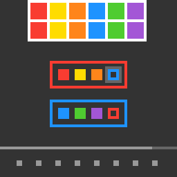

sb26
Fill board slots with colour bricks and guide rings so that, on submit, the read string matches the top.
8 levels · 16 rules · all levels replayed in Lean
Replay
The certified run that cleared every level, one action at a time. Beside each step: the rules of the model that explain it; they are also marked in the rule list below.

Explained by
Press Play or step to load the run. Keys, while the player is on screen: ← → step, Space play / pause. A click is circled; cells that changed are outlined.
How it plays
The colours of the hollow frames in the top row, from left to right, are the string to be assembled. In the middle are several boards enclosed by coloured frames, each with a row of slots; the one with white corner marks at its four corners is the start board. The rack at the bottom holds materials: solid colour bricks, or hollow guide rings. Click one material to select it, then click an empty slot to move it there; two bricks on the board can swap colours. Press submit and the colours are read slot by slot starting from the start board; on reaching a guide ring, first read the whole board whose frame colour is the same as the ring colour, then come back and continue. If the string read out equals the top string, the level is cleared; if not, one cell of the counter is spent. The undo key goes back to the most recent move, and the restart key returns to the start of this level.

Model
The final model: 6 object types and 16 rules. Each rule is a Python check against every recorded step; 12 of them are translated into Lean (the paper's per-game table). Code under a rule is the file of the same name in the agent's Lean project.
Object types
- Target string
targetHollow frames in the top row; their colours, left to right, are the string.Lean · World.lean
-- Layout.target : List Nat structure Layout where target : List Nat boards : List Board rack : List Cell deriving DecidableEq, Repr, Inhabited - Boards
boardsColoured-frame areas with a row of slots each; white corner marks show the start board.Lean · Board.lean
-- Layout.boards : List Board structure Board where frame : Nat root : Bool slots : List Cell deriving DecidableEq, Repr, Inhabited - Rack
rackThe row of material slots at the bottom.Lean · Cell.lean
-- Layout.rack : List Cell structure Cell where row : Nat col : Nat deriving DecidableEq, Repr, Inhabited - Materials
piecesWhich material sits in each slot: a solid colour brick or a hollow guide ring.Lean · Cell.lean
-- World.pieces : List (Cell × Piece) structure Cell where row : Nat col : Nat deriving DecidableEq, Repr, Inhabited - Selection
selectedThe material inside the white frame, or empty if none is selected.Python only - Counter
usedThe row between boards and rack, recording cells spent in this level.Lean · World.lean
-- World.used : Nat structure World where pieces : List (Cell × Piece) sel : Option Cell used : Nat deriving DecidableEq, Repr, Inhabited
Rules
pickClicking a material with none selected frames it in white; nothing else changes.Python
from __future__ import annotations from dataclasses import replace from objects import try_world, unreadable from ._scope import click_case … … def scope_(prev, action, nxt, ctx=None): return _scope(click_case(try_world(prev), try_world(nxt), action, ctx, unreadable(prev) or unreadable(nxt))) def _scope(r): why, case = r if why: return why w, _nw, sel, tgt = case if sel is not None: … if tgt is None: … if w.piece_at(tgt) is None: … return None def assert_(prev, action, nxt, ctx=None): r = click_case(try_world(prev), try_world(nxt), action, ctx, unreadable(prev) or unreadable(nxt)) if _scope(r): return "NA" w, nw, _sel, tgt = r[1] return "TRUE" if nw == replace(w, selected=tgt) else "FALSE"Lean · Pick.lean
import Obj.Derive.Hit namespace Game namespace Pick def scope (_L : Layout) (w : World) (t : Cell) : Bool := w.sel.isNone && (w.pieceAt t).isSome def apply (w : World) (t : Cell) : World := { w with sel := some t } end Pick end GameplaceClicking an empty slot moves the selected material there, deselects, and spends one cell.Python
from __future__ import annotations from dataclasses import replace from derive.moves import exchange from objects import try_world, unreadable from ._scope import click_case … … def scope_(prev, action, nxt, ctx=None): return _scope(click_case(try_world(prev), try_world(nxt), action, ctx, unreadable(prev) or unreadable(nxt))) def _scope(r): why, case = r if why: return why w, _nw, sel, tgt = case if sel is None: … if tgt is None: … if w.piece_at(tgt) is not None: … return None def assert_(prev, action, nxt, ctx=None): r = click_case(try_world(prev), try_world(nxt), action, ctx, unreadable(prev) or unreadable(nxt)) if _scope(r): return "NA" w, nw, sel, tgt = r[1] want = replace(w, pieces=exchange(w.pieces, sel, tgt), selected=None, used=w.used + 1) return "TRUE" if nw == want else "FALSE"Lean · Place.lean
import Obj.Derive.Hit import Obj.Derive.Moves namespace Game namespace Place def scope (_L : Layout) (w : World) (t : Cell) : Bool := w.sel.isSome && w.sel != some t && (w.pieceAt t).isNone def apply (w : World) (s t : Cell) : World := { pieces := exchange w.pieces s t, sel := none, used := w.used + 1 } end Place end GameswapClicking a second board material swaps the two, deselects, and spends one cell.Python
from __future__ import annotations from dataclasses import replace from derive.moves import exchange from objects import try_world, unreadable from ._scope import click_case … … def scope_(prev, action, nxt, ctx=None): return _scope(click_case(try_world(prev), try_world(nxt), action, ctx, unreadable(prev) or unreadable(nxt))) def _scope(r): why, case = r if why: return why w, _nw, sel, tgt = case if sel is None: … if tgt is None: … if tgt == sel: … if w.piece_at(tgt) is None: … if not (w.on_board(sel) and w.on_board(tgt)): … return None def assert_(prev, action, nxt, ctx=None): r = click_case(try_world(prev), try_world(nxt), action, ctx, unreadable(prev) or unreadable(nxt)) if _scope(r): return "NA" w, nw, sel, tgt = r[1] want = replace(w, pieces=exchange(w.pieces, sel, tgt), selected=None, used=w.used + 1) return "TRUE" if nw == want else "FALSE"Lean · Swap.lean
import Obj.Derive.Hit import Obj.Derive.Moves namespace Game namespace Swap def scope (L : Layout) (w : World) (t : Cell) : Bool := match w.sel with | some s => s != t && (w.pieceAt t).isSome && L.onBoard s && L.onBoard t | none => false def apply (w : World) (s t : Cell) : World := { pieces := exchange w.pieces s t, sel := none, used := w.used + 1 } end Swap end GamereselectClicking another rack material while one is selected selects it instead, at no cost.Python
from __future__ import annotations from dataclasses import replace from objects import try_world, unreadable from ._scope import click_case … … def scope_(prev, action, nxt, ctx=None): return _scope(click_case(try_world(prev), try_world(nxt), action, ctx, unreadable(prev) or unreadable(nxt))) def _scope(r): why, case = r if why: return why w, _nw, sel, tgt = case if sel is None: … if tgt is None: … if tgt == sel: … if w.piece_at(tgt) is None: … if w.on_board(sel) or w.on_board(tgt): … return None def assert_(prev, action, nxt, ctx=None): r = click_case(try_world(prev), try_world(nxt), action, ctx, unreadable(prev) or unreadable(nxt)) if _scope(r): return "NA" w, nw, _sel, tgt = r[1] return "TRUE" if nw == replace(w, selected=tgt) else "FALSE"Lean · Reselect.lean
import Obj.Derive.Hit namespace Game namespace Reselect def scope (L : Layout) (w : World) (t : Cell) : Bool := match w.sel with | some s => s != t && (w.pieceAt t).isSome && !L.onBoard s && !L.onBoard t | none => false def apply (w : World) (t : Cell) : World := { w with sel := some t } end Reselect end GameunpickClicking the selected material again deselects it at no cost; nothing moves.Python
from __future__ import annotations from dataclasses import replace from objects import try_world, unreadable from ._scope import click_case … … def scope_(prev, action, nxt, ctx=None): return _scope(click_case(try_world(prev), try_world(nxt), action, ctx, unreadable(prev) or unreadable(nxt))) def _scope(r): why, case = r if why: return why _w, _nw, sel, tgt = case if sel is None: … if tgt != sel: … return None def assert_(prev, action, nxt, ctx=None): r = click_case(try_world(prev), try_world(nxt), action, ctx, unreadable(prev) or unreadable(nxt)) if _scope(r): return "NA" w, nw, _sel, _tgt = r[1] return "TRUE" if nw == replace(w, selected=None) else "FALSE"Lean · Unpick.lean
import Obj.Derive.Hit namespace Game namespace Unpick def scope (_L : Layout) (w : World) (t : Cell) : Bool := w.sel == some t def apply (w : World) : World := { w with sel := none } end Unpick end Gamehand_emptyClicking an empty slot with nothing selected does nothing.Python
from __future__ import annotations from objects import try_world, unreadable from ._scope import click_case … … def scope_(prev, action, nxt, ctx=None): return _scope(click_case(try_world(prev), try_world(nxt), action, ctx, unreadable(prev) or unreadable(nxt))) def _scope(r): why, case = r if why: return why w, _nw, sel, tgt = case if sel is not None: … if tgt is None: … if w.piece_at(tgt) is not None: … return None def assert_(prev, action, nxt, ctx=None): r = click_case(try_world(prev), try_world(nxt), action, ctx, unreadable(prev) or unreadable(nxt)) if _scope(r): return "NA" w, nw, _sel, _tgt = r[1] return "TRUE" if nw == w else "FALSE"Lean · HandEmpty.lean
import Obj.Derive.Hit namespace Game namespace HandEmpty def scope (_L : Layout) (w : World) (t : Cell) : Bool := w.sel.isNone && (w.pieceAt t).isNone def apply (w : World) : World := w end HandEmpty end Gamevoid_clickClicking outside every slot does nothing, and any selection stays.Python
from __future__ import annotations from objects import try_world, unreadable from ._scope import click_case … … def scope_(prev, action, nxt, ctx=None): return _scope(click_case(try_world(prev), try_world(nxt), action, ctx, unreadable(prev) or unreadable(nxt))) def _scope(r): why, case = r if why: return why if case[3] is not None: … return None def assert_(prev, action, nxt, ctx=None): r = click_case(try_world(prev), try_world(nxt), action, ctx, unreadable(prev) or unreadable(nxt)) if _scope(r): return "NA" w, nw, _sel, _tgt = r[1] return "TRUE" if nw == w else "FALSE"Lean · VoidClick.lean
import Obj.Derive.Hit namespace Game namespace VoidClick def scope (L : Layout) (w : World) (c : Cell) : Bool := (hit L w c).isNone def apply (w : World) : World := w end VoidClick end GamesubmitSubmit clears the level exactly when the read string matches; a mismatch spends one cell.Python
from __future__ import annotations from dataclasses import replace from derive.reading import goal from objects import try_world, unreadable from .._common import act … … … def scope_(prev, action, nxt, ctx=None): return _scope(action, ctx, unreadable(prev), unreadable(nxt)) def _scope(action, ctx, bad_prev, bad_next): kind, _cell = act(action) if kind != "submit": … if not ctx or ctx.get("level_prev") is None or ctx.get("level_next") is None: … if bad_prev: return bad_prev if ctx["level_next"] == ctx["level_prev"] and bad_next: … return None def assert_(prev, action, nxt, ctx=None): if _scope(action, ctx, unreadable(prev), unreadable(nxt)): return "NA" w = try_world(prev) leveled = ctx["level_next"] == ctx["level_prev"] + 1 if goal(w): return "TRUE" if leveled else "FALSE" if ctx["level_next"] != ctx["level_prev"]: return "FALSE" return "TRUE" if try_world(nxt) == replace(w, selected=None, used=w.used + 1) else "FALSE"Lean · Submit.lean
import Obj.Derive.Reading namespace Game namespace Submit def apply (L : Layout) (w : World) : Res := if isGoal L w then Res.won else Res.ok { w with sel := none, used := w.used + 1 } end Submit end Gamebar_stepWithin a level, each step except restart spends no counter cell or exactly one.Python
from __future__ import annotations from objects import try_world, unreadable from .._common import act, same_level … def scope_(prev, action, nxt, ctx=None): return _scope(action, ctx, unreadable(prev) or unreadable(nxt)) def _scope(action, ctx, bad): if act(action)[0] == "reset": … if not same_level(ctx): … return bad def assert_(prev, action, nxt, ctx=None): if _scope(action, ctx, unreadable(prev) or unreadable(nxt)): return "NA" d = try_world(nxt).used - try_world(prev).used return "TRUE" if d in (0, 1) else "FALSE"Lean · BarStep.lean
import Obj.World import Step open Game theorem bar_step (L : Layout) (w w' : World) (a : Act) (h : step L w a = Res.ok w') : w'.used = w.used ∨ w'.used = w.used + 1 := by cases a with | click c => simp only [step, clickStep] at h split at h · cases h; exact Or.inl rfl · split at h · cases h; exact Or.inl rfl · split at h · cases h; exact Or.inl rfl · split at h · cases h; exact Or.inl rfl · split at h · cases h · split at h · cases h; exact Or.inr rfl · split at h · cases h; exact Or.inr rfl · split at h · cases h; exact Or.inl rfl · cases h | submit => simp only [step, Submit.apply] at h split at h · cases h · cases h; exact Or.inr rfl | undo => simp [step] at h | reset => simp [step] at hlayout_frozenWithin a level, the top string, boards, slots and rack never change.Python
from __future__ import annotations from objects import try_world, unreadable from .._common import same_level … def scope_(prev, action, nxt, ctx=None): return _scope(ctx, unreadable(prev) or unreadable(nxt)) def _scope(ctx, bad): if not same_level(ctx): … return bad def assert_(prev, action, nxt, ctx=None): if _scope(ctx, unreadable(prev) or unreadable(nxt)): return "NA" w, nw = try_world(prev), try_world(nxt) same = w.target == nw.target and w.boards == nw.boards and w.rack == nw.rack return "TRUE" if same else "FALSE"Lean · LayoutFrozen.lean
import Obj.World import Step open Game def WellPlaced (L : Layout) (w : World) : Prop := (∀ x ∈ w.pieces, x.1 ∈ L.locs) ∧ (∀ s, w.sel = some s → s ∈ L.locs) theorem hit_mem (L : Layout) (w : World) (c t : Cell) (h : hit L w c = some t) : t ∈ L.locs := List.mem_of_find?_eq_some h theorem exchange_mem (L : Layout) (w : World) (a b : Cell) (hp : ∀ x ∈ w.pieces, x.1 ∈ L.locs) (ha : a ∈ L.locs) (hb : b ∈ L.locs) : ∀ x ∈ exchange w.pieces a b, x.1 ∈ L.locs := by intro x hx simp only [exchange, List.mem_map] at hx obtain ⟨y, hy, rfl⟩ := hx simp only [swapCell] split · exact hb · split · exact ha · exact hp y hy theorem layout_frozen (L : Layout) (w w' : World) (a : Act) (hw : WellPlaced L w) (h : step L w a = Res.ok w') : WellPlaced L w' := by obtain ⟨hp, hs⟩ := hw cases a with | click c => simp only [step, clickStep] at h split at h · cases h; exact ⟨hp, hs⟩ · rename_i t ht have htm := hit_mem L w c t ht split at h · cases h refine ⟨hp, ?_⟩ intro s hs' simp only [Pick.apply] at hs' cases hs'; exact htm · split at h · cases h; exact ⟨hp, hs⟩ · split at h · cases h refine ⟨hp, ?_⟩ intro s hs' simp [Unpick.apply] at hs' · split at h · cases h · rename_i s hsel have hsm := hs s hsel split at h · cases h refine ⟨exchange_mem L w s t hp hsm htm, ?_⟩ intro s' hs' simp [Place.apply] at hs' · split at h · cases h refine ⟨exchange_mem L w s t hp hsm htm, ?_⟩ intro s' hs' simp [Swap.apply] at hs' · split at h · cases h refine ⟨hp, ?_⟩ intro s' hs' simp only [Reselect.apply] at hs' cases hs'; exact htm · cases h | submit => simp only [step, Submit.apply] at h split at h · cases h · cases h refine ⟨hp, ?_⟩ intro s hs' simp at hs' | undo => simp [step] at h | reset => simp [step] at hpieces_conservedWithin a level, materials only move; their kinds and colours never change in number.Python
from __future__ import annotations from objects import try_world, unreadable from .._common import same_level … def scope_(prev, action, nxt, ctx=None): return _scope(ctx, unreadable(prev) or unreadable(nxt)) def _scope(ctx, bad): if not same_level(ctx): … return bad def assert_(prev, action, nxt, ctx=None): if _scope(ctx, unreadable(prev) or unreadable(nxt)): return "NA" a = sorted(p for _l, p in try_world(prev).pieces) b = sorted(p for _l, p in try_world(nxt).pieces) return "TRUE" if a == b else "FALSE"Lean · PiecesConserved.lean
import Obj.World import Step open Game theorem exchange_pieces (w : World) (a b : Cell) : (exchange w.pieces a b).map Prod.snd = w.pieces.map Prod.snd := by simp [exchange, Function.comp_def] theorem pieces_conserved (L : Layout) (w w' : World) (a : Act) (h : step L w a = Res.ok w') : w'.pieces.map Prod.snd = w.pieces.map Prod.snd := by cases a with | click c => simp only [step, clickStep] at h split at h · cases h; rfl · split at h · cases h; rfl · split at h · cases h; rfl · split at h · cases h; rfl · split at h · cases h · split at h · cases h; exact exchange_pieces _ _ _ · split at h · cases h; exact exchange_pieces _ _ _ · split at h · cases h; rfl · cases h | submit => simp only [step, Submit.apply] at h split at h · cases h · cases h; rfl | undo => simp [step] at h | reset => simp [step] at hlevel_only_by_submitThe level number advances only on submit; other actions keep it or move it back.Python
from __future__ import annotations from .._common import act … def scope_(prev, action, nxt, ctx=None): return _scope(action, ctx) def _scope(action, ctx): if act(action)[0] == "submit": … if not ctx or ctx.get("level_prev") is None or ctx.get("level_next") is None: … return None def assert_(prev, action, nxt, ctx=None): if _scope(action, ctx): return "NA" return "TRUE" if ctx["level_next"] <= ctx["level_prev"] else "FALSE"Lean · LevelOnlyBySubmit.lean
import Obj.World import Step open Game theorem level_only_by_submit (L : Layout) (w : World) (a : Act) (h : step L w a = Res.won) : a = Act.submit := by cases a with | click c => simp only [step, clickStep] at h split at h · cases h · split at h · cases h · split at h · cases h · split at h · cases h · split at h · cases h · split at h · cases h · split at h · cases h · split at h · cases h · cases h | submit => rfl | undo => simp [step] at h | reset => simp [step] at hundoUndo reverts the latest unreverted placement or swap and never spends or refunds cells.Python onlyPython
from __future__ import annotations from dataclasses import replace from derive.moves import exchange from objects import try_world, unreadable from .._common import act, same_level … … def scope_(prev, action, nxt, ctx=None): return _scope(action, ctx, unreadable(prev) or unreadable(nxt), try_world(prev)) def _scope(action, ctx, bad, w): if act(action)[0] != "undo": … if not same_level(ctx): … if bad: return bad if w.selected is not None: … if not ctx or "undo_stack" not in ctx: … return None def assert_(prev, action, nxt, ctx=None): w, nw = try_world(prev), try_world(nxt) if _scope(action, ctx, unreadable(prev) or unreadable(nxt), w): return "NA" stack = ctx["undo_stack"] if not stack: return "TRUE" if nw == w else "FALSE" a, b = stack[-1] return "TRUE" if nw == replace(w, pieces=exchange(w.pieces, a, b)) else "FALSE"reset_restoresRestart returns to this level's opening: counter cleared, nothing selected, materials back.Python onlyPython
from __future__ import annotations from objects import try_world, unreadable from .._common import act … … def scope_(prev, action, nxt, ctx=None): return _scope(action, ctx, unreadable(nxt)) def _scope(action, ctx, bad_next): if act(action)[0] != "reset": … if not ctx or ctx.get("level_prev") is None or ctx.get("level_next") is None: … if ctx["level_next"] < ctx["level_prev"]: … if ctx.get("level_open") is None: … return bad_next or unreadable(ctx["level_open"]) def assert_(prev, action, nxt, ctx=None): if _scope(action, ctx, unreadable(nxt)): return "NA" if ctx["level_next"] != ctx["level_prev"]: return "FALSE" return "TRUE" if try_world(nxt) == try_world(ctx["level_open"]) else "FALSE"levelup_freshA new level opens with the counter cleared, nothing selected, and every rack slot filled.Python onlyPython
from __future__ import annotations from objects import try_world, unreadable … … def scope_(prev, action, nxt, ctx=None): return _scope(ctx, unreadable(nxt)) def _scope(ctx, bad_next): if not ctx or ctx.get("level_prev") is None or ctx.get("level_next") is None: … if ctx["level_next"] != ctx["level_prev"] + 1: … if ctx.get("state_next") != "NOT_FINISHED": … return bad_next def assert_(prev, action, nxt, ctx=None): if _scope(ctx, unreadable(nxt)): return "NA" nw = try_world(nxt) rack_full = all(nw.piece_at(x) is not None for x in nw.rack) return "TRUE" if (nw.used == 0 and nw.selected is None and rack_full) else "FALSE"recard_restartsA new scorecard restarts the whole game at level 1, identical to the first opening.Python onlyPython
from __future__ import annotations from objects import try_world, unreadable from .._common import act … … def scope_(prev, action, nxt, ctx=None): return _scope(action, ctx, unreadable(nxt)) def _scope(action, ctx, bad_next): if act(action)[0] != "reset": … if not ctx or ctx.get("level_prev") is None or ctx.get("level_next") is None: … if ctx["level_next"] >= ctx["level_prev"]: … if ctx.get("game_open") is None: … return bad_next or unreadable(ctx["game_open"]) def assert_(prev, action, nxt, ctx=None): if _scope(action, ctx, unreadable(nxt)): return "NA" if ctx["level_next"] != 0: return "FALSE" return "TRUE" if try_world(nxt) == try_world(ctx["game_open"]) else "FALSE"
Code is shown with comments and the agent's notes removed; the files as written are in the archive under Check it yourself.
Proof
For every level, Lean starts from the level's first screen, applies the model's rules to the certified actions, and checks that every computed state agrees with the recorded frame on the components the model represents, and that the last one wins. Each theorem is closed by the Lean kernel and is a statement about the learned model.
Every level can be won
theorem L0_observed_win : (Replay.bySeq 309).obs = Replay.ObsIx.levelUp ∧
step L0_layout (Replay.worldAt (Replay.bySeq 309).prev : World) (Replay.bySeq 309).act = Res.won := …theorem L0_winnable : Winnable L0_layout (L0_start : World) := …theorem L1_observed_win : (Replay.bySeq 324).obs = Replay.ObsIx.levelUp ∧
step L1_layout (Replay.worldAt (Replay.bySeq 324).prev : World) (Replay.bySeq 324).act = Res.won := …theorem L1_winnable : Winnable L1_layout (L1_start : World) := …theorem L2_observed_win : (Replay.bySeq 339).obs = Replay.ObsIx.levelUp ∧
step L2_layout (Replay.worldAt (Replay.bySeq 339).prev : World) (Replay.bySeq 339).act = Res.won := …theorem L2_winnable : Winnable L2_layout (L2_start : World) := …theorem L3_observed_win : (Replay.bySeq 354).obs = Replay.ObsIx.levelUp ∧
step L3_layout (Replay.worldAt (Replay.bySeq 354).prev : World) (Replay.bySeq 354).act = Res.won := …theorem L3_winnable : Winnable L3_layout (L3_start : World) := …theorem L4_observed_win : (Replay.bySeq 371).obs = Replay.ObsIx.levelUp ∧
step L4_layout (Replay.worldAt (Replay.bySeq 371).prev : World) (Replay.bySeq 371).act = Res.won := …theorem L4_winnable : Winnable L4_layout (L4_start : World) := …theorem L5_observed_win : (Replay.bySeq 390).obs = Replay.ObsIx.levelUp ∧
step L5_layout (Replay.worldAt (Replay.bySeq 390).prev : World) (Replay.bySeq 390).act = Res.won := …theorem L5_winnable : Winnable L5_layout (L5_start : World) := …theorem L6_observed_win : (Replay.bySeq 407).obs = Replay.ObsIx.levelUp ∧
step L6_layout (Replay.worldAt (Replay.bySeq 407).prev : World) (Replay.bySeq 407).act = Res.won := …theorem L6_winnable : Winnable L6_layout (L6_start : World) := …theorem L7_observed_win : (Replay.bySeq 424).obs = Replay.ObsIx.levelUp ∧
step L7_layout (Replay.worldAt (Replay.bySeq 424).prev : World) (Replay.bySeq 424).act = Res.won := …theorem L7_winnable : Winnable L7_layout (L7_start : World) := …theorem sceneOK_winnable : Winnable sceneOK (sceneStart : World) := …What cannot be won under the model
theorem no_root_no_win (L : Layout) :
∀ w a, NoSingleRoot L w → step L w a ≠ Res.won := …theorem unsolvable_no_root (L : Layout) (w : World) (h : NoSingleRoot L w) : Unsolvable L w := …theorem sceneStuck_unsolvable : Unsolvable sceneStuck (sceneStart : World) := …Statements only; the proofs and the full Lean project are in the archive, with the steps to re-run them, under Check it yourself.
Check it yourself
Everything on this page comes from files you can download and check. The archive holds the agent's files: the recorded run, the concept book, the concept sources, the Lean project and the sealed model file, plus the record of our kernel check.
Download sb26.zip 0.5 MB · 56 files
Re-run the proof
Before you start: our run of this check took 359 s and 6.0 GB of memory at its peak (2026-10-24).
- Download sb26.zip and unpack it. The model and its theorems are in
archive/sb26-20260907/formal/Game.lean. Before changing it, check that its SHA-256 is926b62d9c2e7eead1df35b06206d5f0a004fc7c8252e1bc64f921ce8417f657a - Install Lean with elan, then the version named in the archive's
lean-toolchain:elan toolchain install leanprover/lean4:v4.34.0 - Copy the model file to
Check.leanand append these two lines to the copy:#print axioms consistent #print axioms faithful - In the folder that holds
Check.lean, run:lean +leanprover/lean4:v4.34.0 -M60000 Check.lean - Lean should finish without errors and print:
'consistent' depends on axioms: [propext] 'faithful' depends on axioms: [propext]
What a pass establishes
consistent: for every recorded transition, as read by the agent's parser and with duplicates removed, every rule whose condition holds also has its effect hold. faithful: the certified run, recomputed step by step from the first screen of each level, matches the record and ends in a win. Axioms used: propext, all among Lean's standard ones.
What it does not establish: that the parser reads the screens correctly (that step runs in Python, outside Lean), or that a rule whose condition never occurs in the record is right. The Python file that produced the readings inside the model file is in the archive at meta/repair-20260928/lib/sb26-20260907/_lib.py.